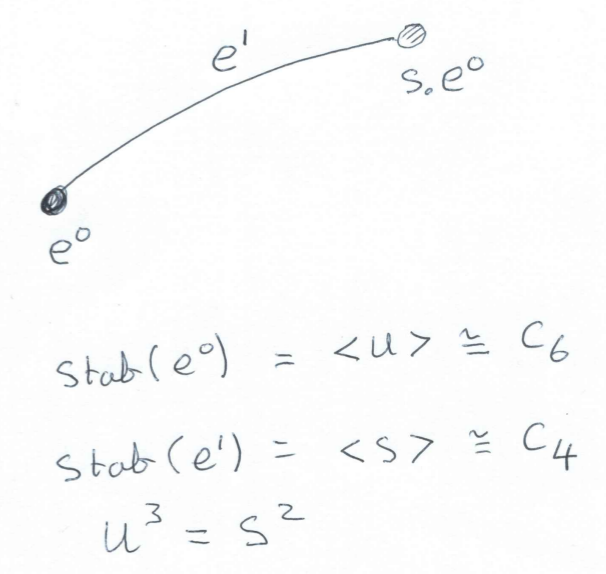
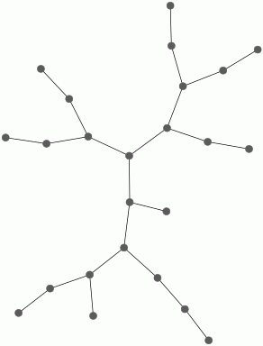
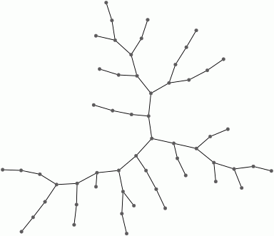
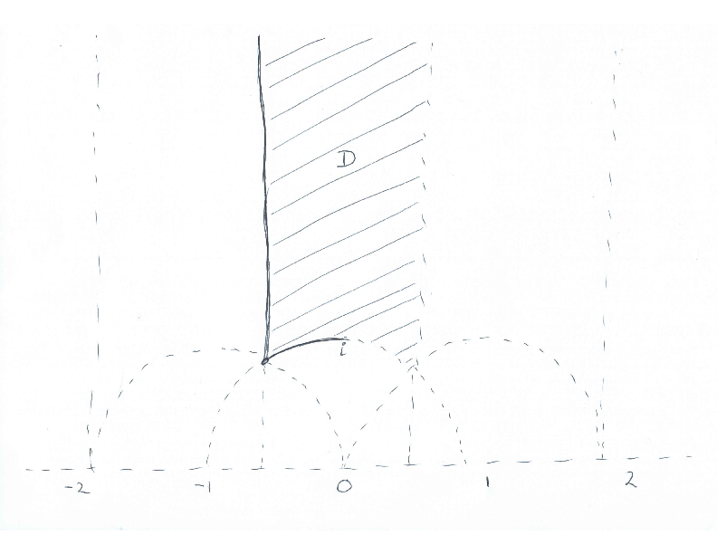
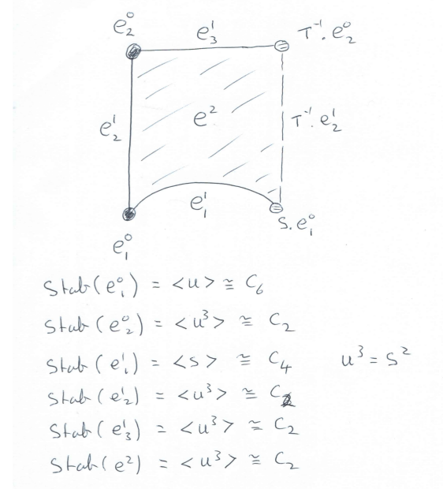
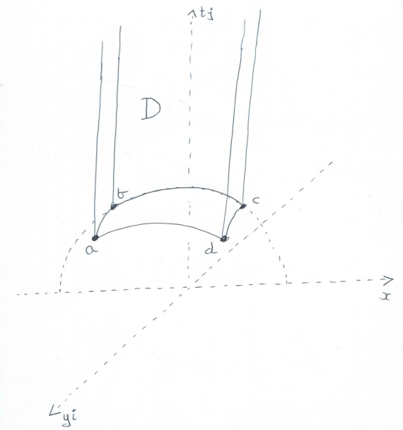
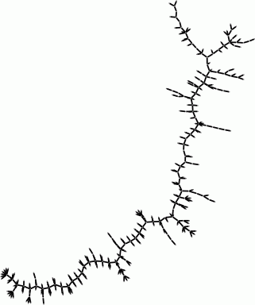

In this chapter we explain how HAP can be used to make computions about modular forms associated to congruence subgroups \(\Gamma\) of \(SL_2(\mathbb Z)\). Also, in Subsection 10.8 onwards, we demonstrate cohomology computations for the Picard group \(SL_2(\mathbb Z[i])\), some Bianchi groups \(PSL_2({\cal O}_{-d}) \) where \({\cal O}_{d}\) is the ring of integers of \(\mathbb Q(\sqrt{-d})\) for square free positive integer \(d\), and some other groups of the form \(SL_m({\cal O})\), \(GL_m({\cal O})\), \(PSL_m({\cal O})\), \(PGL_m({\cal O})\), for \(m=2,3,4\) and certain \({\cal O}=\mathbb Z, {\cal O}_{-d}\).
We begin by recalling the Eichler-Shimura isomorphism [Eic57][Shi59]
\[ S_k(\Gamma) \oplus \overline{S_k(\Gamma)} \oplus E_k(\Gamma) \cong_{\sf Hecke} H^1(\Gamma,P_{\mathbb C}(k-2))\]
which relates the cohomology of groups to the theory of modular forms associated to a finite index subgroup \(\Gamma\) of \(SL_2(\mathbb Z)\). In subsequent sections we explain how to compute with the right-hand side of the isomorphism. But first, for completeness, let us define the terms on the left-hand side.
Let \(N\) be a positive integer. A subgroup \(\Gamma\) of \(SL_2(\mathbb Z)\) is said to be a congruence subgroup of level \(N \) if it contains the kernel of the canonical homomorphism \(\pi_N\colon SL_2(\mathbb Z) \rightarrow SL_2(\mathbb Z/N\mathbb Z)\). So any congruence subgroup is of finite index in \(SL_2(\mathbb Z)\), but the converse is not true.
One congruence subgroup of particular interest is the group \(\Gamma_1(N)=\ker(\pi_N)\), known as the principal congruence subgroup of level \(N\). Another congruence subgroup of particular interest is the group \(\Gamma_0(N)\) of those matrices that project to upper triangular matrices in \(SL_2(\mathbb Z/N\mathbb Z)\).
A modular form of weight \(k\) for a congruence subgroup \(\Gamma\) is a complex valued function on the upper-half plane, \(f\colon {\frak{h}}=\{z\in \mathbb C : Re(z)>0\} \rightarrow \mathbb C\), satisfying:
\(\displaystyle f(\frac{az+b}{cz+d}) = (cz+d)^k f(z)\) for \(\left(\begin{array}{ll}a&b\\ c &d \end{array}\right) \in \Gamma\),
\(f\) is `holomorphic' on the extended upper-half plane \(\frak{h}^\ast = \frak{h} \cup \mathbb Q \cup \{\infty\}\) obtained from the upper-half plane by `adjoining a point at each cusp'.
The collection of all weight \(k\) modular forms for \(\Gamma\) form a vector space \(M_k(\Gamma)\) over \(\mathbb C\).
A modular form \(f\) is said to be a cusp form if \(f(\infty)=0\). The collection of all weight \(k\) cusp forms for \(\Gamma\) form a vector subspace \(S_k(\Gamma)\). There is a decomposition
\[M_k(\Gamma) \cong S_k(\Gamma) \oplus E_k(\Gamma)\]
involving a summand \(E_k(\Gamma)\) known as the Eisenstein space. See [Ste07] for further introductory details on modular forms.
The Eichler-Shimura isomorphism is more than an isomorphism of vector spaces. It is an isomorphism of Hecke modules: both sides admit notions of Hecke operators, and the isomorphism preserves these operators. The bar on the left-hand side of the isomorphism denotes complex conjugation, or anti-holomorphic forms. See [Wie78] for a full account of the isomorphism.
On the right-hand side of the isomorphism, the \(\mathbb Z\Gamma\)-module \(P_{\mathbb C}(k-2)\subset \mathbb C[x,y]\) denotes the space of homogeneous degree \(k-2\) polynomials with action of \(\Gamma\) given by
\[\left(\begin{array}{ll}a&b\\ c &d \end{array}\right)\cdot p(x,y) = p(dx-by,-cx+ay)\ .\]
In particular \(P_{\mathbb C}(0)=\mathbb C\) is the trivial module. Below we shall compute with the integral analogue \(P_{\mathbb Z}(k-2) \subset \mathbb Z[x,y]\).
In the following sections we explain how to use the right-hand side of the Eichler-Shimura isomorphism to compute eigenvalues of the Hecke operators restricted to the subspace \(S_k(\Gamma)\) of cusp forms.
The matrices \(S=\left(\begin{array}{rr}0&-1\\ 1 &0 \end{array}\right)\) and \(T=\left(\begin{array}{rr}1&1\\ 0 &1 \end{array}\right)\) generate \(SL_2(\mathbb Z)\) and it is not difficult to devise an algorithm for expressing an arbitrary integer matrix \(A\) of determinant \(1\) as a word in \(S\), \(T\) and their inverses. The following illustrates such an algorithm.
gap> A:=[[4,9],[7,16]];; gap> word:=AsWordInSL2Z(A); [ [ [ 1, 0 ], [ 0, 1 ] ], [ [ 0, 1 ], [ -1, 0 ] ], [ [ 1, -1 ], [ 0, 1 ] ], [ [ 0, 1 ], [ -1, 0 ] ], [ [ 1, 1 ], [ 0, 1 ] ], [ [ 0, 1 ], [ -1, 0 ] ], [ [ 1, -1 ], [ 0, 1 ] ], [ [ 1, -1 ], [ 0, 1 ] ], [ [ 1, -1 ], [ 0, 1 ] ], [ [ 0, 1 ], [ -1, 0 ] ], [ [ 1, 1 ], [ 0, 1 ] ], [ [ 1, 1 ], [ 0, 1 ] ] ] gap> Product(word); [ [ 4, 9 ], [ 7, 16 ] ]
It is convenient to introduce the matrix \(U=ST = \left(\begin{array}{rr}0&-1\\ 1 &1 \end{array}\right)\). The matrices \(S\) and \(U\) also generate \(SL_2(\mathbb Z)\). In fact we have a free presentation \(SL_2(\mathbb Z)= \langle S,U\, |\, S^4=U^6=1 \rangle \).
The cubic tree \(\cal T\) is a tree (i.e. a \(1\)-dimensional contractible regular CW-complex) with countably infinitely many edges in which each vertex has degree \(3\). We can realize the cubic tree \(\cal T\) by taking the left cosets of \({\cal U}=\langle U\rangle\) in \(SL_2(\mathbb Z)\) as vertices, and joining cosets \(x\,{\cal U} \) and \(y\,{\cal U}\) by an edge if, and only if, \(x^{-1}y \in {\cal U}\, S\,{\cal U}\). Thus the vertex \(\cal U \) is joined to \(S\,{\cal U} \), \(US\,{\cal U}\) and \(U^2S\,{\cal U}\). The vertices of this tree are in one-to-one correspondence with all reduced words in \(S\), \(U\) and \(U^2\) that, apart from the identity, end in \(S\).
From our realization of the cubic tree \(\cal T\) we see that \(SL_2(\mathbb Z)\) acts on \(\cal T\) in such a way that each vertex is stabilized by a cyclic subgroup conjugate to \({\cal U}=\langle U\rangle\) and each edge is stabilized by a cyclic subgroup conjugate to \({\cal S} =\langle S \rangle\).
In order to store this action of \(SL_2(\mathbb Z)\) on the cubic tree \(\cal T\) we just need to record the following finite amount of information.

The modular group \({\cal M}=PSL_2(\mathbb Z)\) is isomorphic, as an abstract group, to the free product \(\mathbb Z_2\ast \mathbb Z_3\). By the Kurosh subgroup theorem, any finite index subgroup \(M \subset {\cal M}\) is isomorphic to the free product of finitely many copies of \(\mathbb Z_2\)s, \(\mathbb Z_3\)s and \(\mathbb Z\)s. A subset \(\underline x \subset M\) is an independent set of subgroup generators if \(M\) is the free product of the cyclic subgroups \(<x >\) as \(x\) runs over \(\underline x\). Let us say that a set of elements in \(SL_2(\mathbb Z)\) is projectively independent if it maps injectively onto an independent set of subgroup generators \(\underline x\subset {\cal M}\). The generating set \(\{S,U\}\) for \(SL_2(\mathbb Z)\) given in the preceding section is projectively independent.
We are interested in constructing a set of generators for a given congruence subgroup \(\Gamma\). If a small generating set for \(\Gamma\) is required then we should aim to construct one which is close to being projectively independent.
It is useful to invoke the following general result which follows from a perturbation result about free \(\mathbb ZG\)-resolutons in [EHS06, Theorem 2] and an old observation of John Milnor that a free \(\mathbb ZG\)-resolution can be realized as the cellular chain complex of a CW-complex if it can be so realized in low dimensions.
Theorem. Let \(X\) be a contractible CW-complex on which a group \(G\) acts by permuting cells. The cellular chain complex \(C_\ast X\) is a \(\mathbb ZG\)-resolution of \(\mathbb Z\) which typically is not free. Let \([e^n]\) denote the orbit of the n-cell \(e^n\) under the action. Let \(G^{e^n} \le G\) denote the stabilizer subgroup of \(e^n\), in which group elements are not required to stabilize \(e^n\) point-wise. Let \(Y_{e^n}\) denote a contractible CW-complex on which \(G^{e^n}\) acts cellularly and freely. Then there exists a contractible CW-complex \(W\) on which \(G\) acts cellularly and freely, and in which the orbits of \(n\)-cells are labelled by \([e^p]\otimes [f^q]\) where \(p+q=n\) and \([e^p]\) ranges over the \(G\)-orbits of \(p\)-cells in \(X\), \([f^q]\) ranges over the \(G^{e^p}\)-orbits of \(q\)-cells in \(Y_{e^p}\).
Let \(W\) be as in the theorem. Then the quotient CW-complex \(B_G=W/G\) is a classifying space for \(G\). Let \(T\) denote a maximal tree in the \(1\)-skeleton \(B^1_G\). Basic geometric group theory tells us that the \(1\)-cells in \(B^1_G\setminus T\) correspond to a generating set for \(G\).
Suppose we wish to compute a set of generators for a principal congruence subgroup \(\Gamma=\Gamma_1(N)\). In the above theorem take \(X={\cal T}\) to be the cubic tree, and note that \(\Gamma\) acts freely on \(\cal T\) and thus that \(W={\cal T}\). To determine the \(1\)-cells of \(B_{\Gamma}\setminus T\) we need to determine a cellular subspace \(D_\Gamma \subset \cal T\) whose images under the action of \(\Gamma\) cover \(\cal T\) and are pairwise either disjoint or identical. The subspace \(D_\Gamma\) will not be a CW-complex as it won't be closed, but it can be chosen to be connected, and hence contractible. We call \(D_\Gamma\) a fundamental region for \(\Gamma\). We denote by \(\mathring D_\Gamma\) the largest CW-subcomplex of \(D_\Gamma\). The vertices of \(\mathring D_\Gamma\) are the same as the vertices of \(D_\Gamma\). Thus \(\mathring D_\Gamma\) is a subtree of the cubic tree with \(|\Gamma|/6\) vertices. For each vertex \(v\) in the tree \(\mathring D_\Gamma\) define \(\eta(v)=3 -{\rm degree}(v)\). Then the number of generators for \( \Gamma \) will be \((1/2)\sum_{v\in \mathring D_\Gamma} \eta(v)\).
The following commands determine projectively independent generators for \(\Gamma_1(6)\) and display \(\mathring D_{\Gamma_1(6)}\). The subgroup \(\Gamma_1(6)\) is free on \(13\) generators.
gap> G:=HAP_PrincipalCongruenceSubgroup(6);; gap> gens:=GeneratorsOfGroup(G); [ [ [ -83, -18 ], [ 60, 13 ] ], [ [ -77, -18 ], [ 30, 7 ] ], [ [ -65, -12 ], [ 168, 31 ] ], [ [ -53, -12 ], [ 84, 19 ] ], [ [ -47, -18 ], [ 222, 85 ] ], [ [ -41, -12 ], [ 24, 7 ] ], [ [ -35, -6 ], [ 6, 1 ] ], [ [ -11, -18 ], [ 30, 49 ] ], [ [ -11, -6 ], [ 24, 13 ] ], [ [ -5, -18 ], [ 12, 43 ] ], [ [ -5, -12 ], [ 18, 43 ] ], [ [ -5, -6 ], [ 6, 7 ] ], [ [ 1, 0 ], [ -6, 1 ] ] ]

An alternative but very related approach to computing generators of congruence subgroups of \(SL_2(\mathbb Z)\) is described in [Kul91].
The congruence subgroup \(\Gamma_0(N)\) does not act freely on the vertices of \(\cal T\), and so one needs to incorporate a generator for the cyclic stabilizer group according to the above theorem. Alternatively, we can replace the cubic tree by a six-fold cover \({\cal T}'\) on whose vertex set \(\Gamma_0(N)\) acts freely. This alternative approach will produce a redundant set of generators. The following commands display \(\mathring D_{\Gamma_0(39)}\) for a fundamental region in \({\cal T}'\). They also use the corresponding generating set for \(\Gamma_0(39)\), involving \(18\) generators, to compute the abelianization \(\Gamma_0(39)^{ab}= \mathbb Z_2 \oplus \mathbb Z_3^2 \oplus \mathbb Z^9\). The abelianization shows that any generating set has at least \(11\) generators.
gap> G:=HAP_CongruenceSubgroupGamma0(39);; gap> HAP_SL2TreeDisplay(G); gap> Length(GeneratorsOfGroup(G)); 18 gap> AbelianInvariants(G); [ 0, 0, 0, 0, 0, 0, 0, 0, 0, 2, 3, 3 ]

Note that to compute \(D_\Gamma\) one only needs to be able to test whether a given matrix lies in \(\Gamma\) or not. Given an inclusion \(\Gamma'\subset \Gamma\) of congruence subgroups, it is straightforward to use the trees \(\mathring D_{\Gamma'}\) and \(\mathring D_{\Gamma}\) to compute a system of coset representative for \(\Gamma'\setminus \Gamma\).
To compute the cohomology \(H^n(\Gamma,A)\) of a congruence subgroup \(\Gamma\) with coefficients in a \(\mathbb Z\Gamma\)-module \(A\) we need to construct \(n+1\) terms of a free \(\mathbb ZG\)-resolution of \(\mathbb Z\). We can do this by first using perturbation techniques (as described in [BE14]) to combine the cubic tree with resolutions for the cyclic groups of order \(4\) and \(6\) in order to produce a free \(\mathbb ZG\)-resolution \(R_\ast\) for \(G=SL_2(\mathbb Z)\). This resolution is also a free \(\mathbb Z\Gamma\)-resolution with each term of rank
\[{\rm rank}_{\mathbb Z\Gamma} R_k = |G:\Gamma|\times {\rm rank}_{\mathbb ZG} R_k\ .\]
For congruence subgroups of lowish index in \(G\) this resolution suffices to make computations.
The following commands compute
\[H^1(\Gamma_0(39),\mathbb Z) = \mathbb Z^9\ .\]
gap> R:=ResolutionSL2Z_alt(2); Resolution of length 2 in characteristic 0 for SL(2,Integers) . gap> gamma:=HAP_CongruenceSubgroupGamma0(39);; gap> S:=ResolutionFiniteSubgroup(R,gamma); Resolution of length 2 in characteristic 0 for CongruenceSubgroupGamma0( 39) . gap> Cohomology(HomToIntegers(S),1); [ 0, 0, 0, 0, 0, 0, 0, 0, 0 ]
This computation establishes that the space \(M_2(\Gamma_0(39))\) of weight \(2\) modular forms is of dimension \(9\).
The following commands show that \({\rm rank}_{\mathbb Z\Gamma_0(39)} R_1 = 112\) but that it is possible to apply `Tietze like' simplifications to \(R_\ast\) to obtain a free \(\mathbb Z\Gamma_0(39)\)-resolution \(T_\ast\) with \({\rm rank}_{\mathbb Z\Gamma_0(39)} T_1 = 11\). It is more efficient to work with \(T_\ast\) when making cohomology computations with coefficients in a module \(A\) of large rank.
gap> S!.dimension(1); 112 gap> T:=TietzeReducedResolution(S); Resolution of length 2 in characteristic 0 for CongruenceSubgroupGamma0( 39) . gap> T!.dimension(1); 11
The following commands compute
\[H^1(\Gamma_0(39),P_{\mathbb Z}(8)) = \mathbb Z_3 \oplus \mathbb Z_6 \oplus \mathbb Z_{168} \oplus \mathbb Z^{84}\ ,\]
\[H^1(\Gamma_0(39),P_{\mathbb Z}(9)) = \mathbb Z_2 \oplus \mathbb Z_2 .\]
gap> P:=HomogeneousPolynomials(gamma,8);; gap> c:=Cohomology(HomToIntegralModule(T,P),1); [ 3, 6, 168, 0, 0, 0, 0, 0, 0, 0, 0, 0, 0, 0, 0, 0, 0, 0, 0, 0, 0, 0, 0, 0, 0, 0, 0, 0, 0, 0, 0, 0, 0, 0, 0, 0, 0, 0, 0, 0, 0, 0, 0, 0, 0, 0, 0, 0, 0, 0, 0, 0, 0, 0, 0, 0, 0, 0, 0, 0, 0, 0, 0, 0, 0, 0, 0, 0, 0, 0, 0, 0, 0, 0, 0, 0, 0, 0, 0, 0, 0, 0, 0, 0, 0, 0, 0 ] gap> Length(c); 87 gap> P:=HomogeneousPolynomials(gamma,9);; gap> c:=Cohomology(HomToIntegralModule(T,P),1); [ 2, 2 ]
This computation establishes that the space \(M_{10}(\Gamma_0(39))\) of weight \(10\) modular forms is of dimension \(84\), and \(M_{11}(\Gamma_0(39))\) is of dimension \(0\). (There are never any modular forms of odd weight, and so \(M_k(\Gamma)=0\) for all odd \(k\) and any congruence subgroup \(\Gamma\).)
To define and compute cuspidal cohomology we consider the action of \(SL_2(\mathbb Z)\) on the upper-half plane \({\frak h}\) given by
\[\left(\begin{array}{ll}a&b\\ c &d \end{array}\right) z = \frac{az +b}{cz+d}\ .\]
A standard 'fundamental domain' for this action is the region
\[\begin{array}{ll} D=&\{z\in {\frak h}\ :\ |z| > 1, |{\rm Re}(z)| < \frac{1}{2}\} \\ & \cup\ \{z\in {\frak h} \ :\ |z| \ge 1, {\rm Re}(z)=-\frac{1}{2}\}\\ & \cup\ \{z \in {\frak h}\ :\ |z|=1, -\frac{1}{2} \le {\rm Re}(z) \le 0\} \end{array} \]
illustrated below.

The action factors through an action of \(PSL_2(\mathbb Z) =SL_2(\mathbb Z)/\langle \left(\begin{array}{rr}-1&0\\ 0 &-1 \end{array}\right)\rangle\). The images of \(D\) under the action of \(PSL_2(\mathbb Z)\) cover the upper-half plane, and any two images have at most a single point in common. The possible common points are the bottom left-hand corner point which is stabilized by \(\langle U\rangle\), and the bottom middle point which is stabilized by \(\langle S\rangle\).
A congruence subgroup \(\Gamma\) has a `fundamental domain' \(D_\Gamma\) equal to a union of finitely many copies of \(D\), one copy for each coset in \(\Gamma\setminus SL_2(\mathbb Z)\). The quotient space \(X=\Gamma\setminus {\frak h}\) is not compact, and can be compactified in several ways. We are interested in the Borel-Serre compactification. This is a space \(X^{BS}\) for which there is an inclusion \(X\hookrightarrow X^{BS}\) and this inclusion is a homotopy equivalence. One defines the boundary \(\partial X^{BS} = X^{BS} - X\) and uses the inclusion \(\partial X^{BS} \hookrightarrow X^{BS} \simeq X\) to define the cuspidal cohomology group, over the ground ring \(\mathbb C\), as
\[ H_{cusp}^n(\Gamma,P_{\mathbb C}(k-2)) = \ker (\ H^n(X,P_{\mathbb C}(k-2)) \rightarrow H^n(\partial X^{BS},P_{\mathbb C}(k-2)) \ ).\]
Strictly speaking, this is the definition of interior cohomology \(H_!^n(\Gamma,P_{\mathbb C}(k-2))\) which in general contains the cuspidal cohomology as a subgroup. However, for congruence subgroups of \(SL_2(\mathbb Z)\) there is equality \(H_!^n(\Gamma,P_{\mathbb C}(k-2)) = H_{cusp}^n(\Gamma,P_{\mathbb C}(k-2))\).
Working over \(\mathbb C\) has the advantage of avoiding the technical issue that \(\Gamma \) does not necessarily act freely on \({\frak h}\) since there are points with finite cyclic stabilizer groups in \(SL_2(\mathbb Z)\). But it has the disadvantage of losing information about torsion in cohomology. So HAP confronts the issue by working with a contractible CW-complex \(\tilde X^{BS}\) on which \(\Gamma\) acts freely, and \(\Gamma\)-equivariant inclusion \(\partial \tilde X^{BS} \hookrightarrow \tilde X^{BS}\). The definition of cuspidal cohomology that we use, which coincides with the above definition when working over \(\mathbb C\), is
\[ H_{cusp}^n(\Gamma,A) = \ker (\ H^n({\rm Hom}_{\, \mathbb Z\Gamma}(C_\ast(\tilde X^{BS}), A)\, ) \rightarrow H^n(\ {\rm Hom}_{\, \mathbb Z\Gamma}(C_\ast(\tilde \partial X^{BS}), A)\, \ ).\]
The following data is recorded and, using perturbation theory, is combined with free resolutions for \(C_4\) and \(C_6\) to constuct \(\tilde X^{BS}\).

The following commands calculate
\[H^1_{cusp}(\Gamma_0(39),\mathbb Z) = \mathbb Z^6\ .\]
gap> gamma:=HAP_CongruenceSubgroupGamma0(39);; gap> k:=2;; deg:=1;; c:=CuspidalCohomologyHomomorphism(gamma,deg,k); [ g1, g2, g3, g4, g5, g6, g7, g8, g9 ] -> [ g1^-1*g3, g1^-1*g3, g1^-1*g3, g1^-1*g3, g1^-1*g2, g1^-1*g3, g1^-1*g4, g1^-1*g4, g1^-1*g4 ] gap> AbelianInvariants(Kernel(c)); [ 0, 0, 0, 0, 0, 0 ]
From the Eichler-Shimura isomorphism and the already calculated dimension of \(M_2(\Gamma_0(39))\cong \mathbb C^9\), we deduce from this cuspidal cohomology that the space \(S_2(\Gamma_0(39))\) of cuspidal weight \(2\) forms is of dimension \(3\), and the Eisenstein space \(E_2(\Gamma_0(39))\cong \mathbb C^3\) is of dimension \(3\).
The following commands show that the space \(S_4(\Gamma_0(39))\) of cuspidal weight \(4\) forms is of dimension \(12\).
gap> gamma:=HAP_CongruenceSubgroupGamma0(39);; gap> k:=4;; deg:=1;; c:=CuspidalCohomologyHomomorphism(gamma,deg,k);; gap> AbelianInvariants(Kernel(c)); [ 0, 0, 0, 0, 0, 0, 0, 0, 0, 0, 0, 0, 0, 0, 0, 0, 0, 0, 0, 0, 0, 0, 0, 0 ]
A congruence subgroup \(\Gamma \le SL_m(\mathbb Z)\) and element \(g\in SL_m(\mathbb Q)\) determine the subgroup \(\Gamma' = \Gamma \cap g\Gamma g^{-1} \) and homomorphisms
\[ \Gamma\ \hookleftarrow\ \Gamma'\ \ \stackrel{\gamma \mapsto g^{-1}\gamma g}{\longrightarrow}\ \ g^{-1}\Gamma' g\ \hookrightarrow \Gamma\ . \]
These homomorphisms give rise to homomorphisms of cohomology groups
\[H^n(\Gamma,\mathbb Z)\ \ \stackrel{tr}{\leftarrow} \ \ H^n(\Gamma',\mathbb Z) \ \ \stackrel{\alpha}{\leftarrow} \ \ H^n(g^{-1}\Gamma' g,\mathbb Z) \ \ \stackrel{\beta}{\leftarrow} H^n(\Gamma, \mathbb Z) \]
with \(\alpha\), \(\beta\) functorial maps, and \(tr\) the transfer map. We define the composite \(T_g=tr \circ \alpha \circ \beta\colon H^n(\Gamma, \mathbb Z) \rightarrow H^n(\Gamma, \mathbb Z)\) to be the Hecke operator determined by \(g\). Further details on this description of Hecke operators can be found in [Ste07, Appendix by P. Gunnells].
For each integer \(s\ge 1\) we set \(T_s =T_s\) with for \(g=\left(\begin{array}{cc}1&0\\0&\frac{1}{s}\end{array}\right)\).
The following commands compute \(T_2\) and \(T_5\) for \(n=1\) and \(\Gamma=\Gamma_0(39)\). The commands also compute the eigenvalues of these two Hecke operators. The final command confirms that \(T_2\) and \(T_5\) commute. (It is a fact that \(T_pT_q=T_qT_p\) for all integers \(p,q\).)
gap> gamma:=HAP_CongruenceSubgroupGamma0(39);; gap> p:=2;;N:=1;;h:=HeckeOperator(gamma,p,N);; gap> AbelianInvariants(Source(h)); [ 0, 0, 0, 0, 0, 0, 0, 0, 0 ] gap> T2:=HomomorphismAsMatrix(h);; gap> Display(T2); [ [ -2, -2, 2, 2, 1, 2, 0, 0, 0 ], [ -2, 0, 1, 2, -2, 2, 2, 2, -2 ], [ -2, -1, 2, 2, -1, 2, 1, 1, -1 ], [ -2, -1, 2, 2, 1, 1, 0, 0, 0 ], [ -1, 0, 0, 2, -3, 2, 3, 3, -3 ], [ 0, 1, 1, 1, -1, 0, 1, 1, -1 ], [ -1, 1, 1, -1, 0, 1, 2, -1, 1 ], [ -1, -1, 0, 2, -3, 2, 1, 4, -1 ], [ 0, 1, 0, -1, -2, 1, 1, 1, 2 ] ] gap> Eigenvalues(Rationals,T2); [ 3, 1 ] gap> p:=5;;N:=1;;h:=HeckeOperator(gamma,p,N);; gap> T5:=HomomorphismAsMatrix(h);; gap> Display(T5); [ [ -1, -1, 3, 4, 0, 0, 1, 1, -1 ], [ -5, -1, 5, 4, 0, 0, 3, 3, -3 ], [ -2, 0, 4, 4, 1, 0, -1, -1, 1 ], [ -2, 0, 3, 2, -3, 2, 4, 4, -4 ], [ -4, -2, 4, 4, 3, 0, 1, 1, -1 ], [ -6, -4, 5, 6, 1, 2, 2, 2, -2 ], [ 1, 5, 0, -4, -3, 2, 5, -1, 1 ], [ -2, -2, 2, 4, 0, 0, -2, 4, 2 ], [ 1, 3, 0, -4, -4, 2, 2, 2, 4 ] ] gap> Eigenvalues(Rationals,T5); [ 6, 2 ] gap>T2*T5=T5*T2; true
Given a modular form \(f\colon {\frak h} \rightarrow \mathbb C\) associated to a congruence subgroup \(\Gamma\), and given a compact edge \(e\) in the tessellation of \({\frak h}\) (i.e. an edge in the cubic tree \(\cal T\)) arising from the above fundamental domain for \(SL_2(\mathbb Z)\), we can evaluate
\[\int_e f(z)\,dz \ .\]
In this way we obtain a cochain \(f_1\colon C_1({\cal T}) \rightarrow \mathbb C\) in \(Hom_{\mathbb Z\Gamma}(C_1({\cal T}), \mathbb C)\) representing a cohomology class \(c(f) \in H^1(\, Hom_{\mathbb Z\Gamma}(C_\ast({\cal T}), \mathbb C) \,) = H^1(\Gamma,\mathbb C)\). The correspondence \(f\mapsto c(f)\) underlies the Eichler-Shimura isomorphism. Hecke operators can be used to recover modular forms from cohomology classes.
Hecke operators restrict to operators on cuspidal cohomology. On the left-hand side of the Eichler-Shimura isomorphism Hecke operators restrict to operators \(T_s\colon S_2(\Gamma) \rightarrow S_2(\Gamma)\) for \(s\ge 1\).
Let us now introduce the function \(q=q(z)=e^{2\pi i z}\) which is holomorphic on \(\mathbb C\). For any modular form \(f(z)\) there are numbers \(a_n\) such that
\[f(z) = \sum_{s=0}^\infty a_sq^s \]
for all \(z\in {\frak h}\). The form \(f\) is a cusp form if \(a_0=0\).
A non-zero cusp form \(f\in S_2(\Gamma)\) is an eigenform if it is simultaneously an eigenvector for the Hecke operators \(T_s\) for all \(s =1,2,3,\cdots\). An eigenform is said to be normalized if its coefficient \(a_1=1\). It turns out that if \(f\) is a normalized eigenform then the coefficient \(a_s\) is an eigenvalue for \(T_s\) (see for instance [Ste07] for details). It can be shown [AL70] that \(f\in S_2(\Gamma_0(N))\) admits a basis of eigenforms.
This all implies that, in principle, we can construct an approximation to an explicit basis for the space \(S_2(\Gamma)\) of cusp forms by computing eigenvalues for Hecke operators.
Suppose that we would like a basis for \(S_2(\Gamma_0(11))\). The following commands first show that \(H^1_{cusp}(\Gamma_0(11),\mathbb Z)=\mathbb Z\oplus \mathbb Z\) from which we deduce that \(S_2(\Gamma_0(11)) =\mathbb C\) is \(1\)-dimensional. Then eigenvalues of Hecke operators are calculated to establish that the modular form
\[f = q -2q^2 -q^3 +q^4 +q^5 +2q^6 -2q^7 +2q^8 -3q^9 -2q^{10} + \cdots \]
constitutes a basis for \(S_2(\Gamma_0(11))\).
gap> gamma:=HAP_CongruenceSubgroupGamma0(11);; gap> AbelianInvariants(Kernel(CuspidalCohomologyHomomorphism(gamma,1,2))); [ 0, 0 ] gap> T1:=HomomorphismAsMatrix(HeckeOperator(gamma,1,1));; Display(T1); [ [ 1, 0, 0 ], [ 0, 1, 0 ], [ 0, 0, 1 ] ] gap> T2:=HomomorphismAsMatrix(HeckeOperator(gamma,2,1));; Display(T2); [ [ 3, -4, 4 ], [ 0, -2, 0 ], [ 0, 0, -2 ] ] gap> T3:=HomomorphismAsMatrix(HeckeOperator(gamma,3,1));; Display(T3); [ [ 4, -4, 4 ], [ 0, -1, 0 ], [ 0, 0, -1 ] ] gap> T4:=HomomorphismAsMatrix(HeckeOperator(gamma,4,1));; Display(T4); [ [ 6, -4, 4 ], [ 0, 1, 0 ], [ 0, 0, 1 ] ] gap> T5:=HomomorphismAsMatrix(HeckeOperator(gamma,5,1));; Display(T5); [ [ 6, -4, 4 ], [ 0, 1, 0 ], [ 0, 0, 1 ] ] gap> T6:=HomomorphismAsMatrix(HeckeOperator(gamma,6,1));; Display(T6); [ [ 12, -8, 8 ], [ 0, 2, 0 ], [ 0, 0, 2 ] ] gap> T7:=HomomorphismAsMatrix(HeckeOperator(gamma,7,1));; Display(T7); [ [ 8, -8, 8 ], [ 0, -2, 0 ], [ 0, 0, -2 ] ] gap> T8:=HomomorphismAsMatrix(HeckeOperator(gamma,8,1));; Display(T8); [ [ 12, -8, 8 ], [ 0, 2, 0 ], [ 0, 0, 2 ] ] gap> T9:=HomomorphismAsMatrix(HeckeOperator(gamma,9,1));; Display(T9); [ [ 12, -12, 12 ], [ 0, -3, 0 ], [ 0, 0, -3 ] ] gap> T10:=HomomorphismAsMatrix(HeckeOperator(gamma,10,1));; Display(T10); [ [ 18, -16, 16 ], [ 0, -2, 0 ], [ 0, 0, -2 ] ]
For a normalized eigenform \(f=1 + \sum_{s=2}^\infty a_sq^s\) the coefficients \(a_s\) with \(s\) a composite integer can be expressed in terms of the coefficients \(a_p\) for prime \(p\). If \(r,s\) are coprime then \(T_{rs} =T_rT_s\). If \(p\) is a prime that is not a divisor of the level \(N\) of \(\Gamma\) then \(a_{p^m} =a_{p^{m-1}}a_p - p a_{p^{m-2}}.\) If the prime \( p\) divides \(N\) then \(a_{p^m} = (a_p)^m\). It thus suffices to compute the coefficients \(a_p\) for prime integers \(p\) only.
Let us now consider the Picard group \(G=SL_2(\mathbb Z[ i])\) and its action on upper-half space
\[{\frak h}^3 =\{(z,t) \in \mathbb C\times \mathbb R\ |\ t > 0\} \ . \]
To describe the action we introduce the symbol \(j\) satisfying \(j^2=-1\), \(ij=-ji\) and write \(z+tj\) instead of \((z,t)\). The action is given by
\[\left(\begin{array}{ll}a&b\\ c &d \end{array}\right)\cdot (z+tj) \ = \ \left(a(z+tj)+b\right)\left(c(z+tj)+d\right)^{-1}\ .\]
Alternatively, and more explicitly, the action is given by
\[\left(\begin{array}{ll}a&b\\ c &d \end{array}\right)\cdot (z+tj) \ = \ \frac{(az+b)\overline{(cz+d) } + a\overline c y^2}{|cz +d|^2 + |c|^2y^2} \ +\ \frac{y}{|cz+d|^2+|c|^2y^2}\, j \ .\]
A standard 'fundamental domain' \(D\) for this action is the following region (with some of the boundary points removed).
\[ \{z+tj\in {\frak h}^3\ |\ 0 \le |{\rm Re}(z)| \le \frac{1}{2}, 0\le {\rm Im}(z) \le \frac{1}{2}, z\overline z +t^2 \ge 1\} \]

The four bottom vertices of \(D\) are \(a = -\frac{1}{2} +\frac{1}{2}i +\frac{\sqrt{2}}{2}j\), \(b = -\frac{1}{2} +\frac{\sqrt{3}}{2}j\), \(c = \frac{1}{2} +\frac{\sqrt{3}}{2}j\), \(d = \frac{1}{2} +\frac{1}{2}i +\frac{\sqrt{2}}{2}j\).
The upper-half space \({\frak h}^3\) can be retracted onto a \(2\)-dimensional subspace \({\cal T} \subset {\frak h}^3\). The space \({\cal T}\) is a contractible \(2\)-dimensional regular CW-complex, and the action of the Picard group \(G\) restricts to a cellular action of \(G\) on \({\cal T}\). Under this action there is one orbit of \(2\)-cells, represented by the curvilinear square with vertices \(a\), \(b\), \(c\) and \(d\) in the picture. This \(2\)-cell has stabilizer group isomorphic to the quaternion group \(Q_4\) of order \(8\). There are two orbits of \(1\)-cells, both with stabilizer group isomorphic to a semi-direct product \(C_3:C_4\). There is one orbit of \(0\)-cells, with stabilizer group isomorphic to \(SL(2,3)\).
Using perturbation techniques, the \(2\)-complex \({\cal T}\) can be combined with free resolutions for the cell stabilizer groups to contruct a regular CW-complex \(X\) on which the Picard group \(G\) acts freely. The following commands compute the first few terms of the free \(\mathbb ZG\)-resolution \(R_\ast =C_\ast X\). Then \(R_\ast\) is used to compute
\[H^1(G,\mathbb Z) =0\ ,\]
\[H^2(G,\mathbb Z) =\mathbb Z_2\oplus \mathbb Z_2\ ,\]
\[H^3(G,\mathbb Z) =\mathbb Z_6\ ,\]
\[H^4(G,\mathbb Z) =\mathbb Z_4\oplus \mathbb Z_{24}\ ,\]
and compute a free presentation for \(G\) involving four generators and seven relators.
gap> K:=ContractibleGcomplex("SL(2,O-1)");; gap> R:=FreeGResolution(K,5);; gap> Cohomology(HomToIntegers(R),1); [ ] gap> Cohomology(HomToIntegers(R),2); [ 2, 2 ] gap> Cohomology(HomToIntegers(R),3); [ 6 ] gap> Cohomology(HomToIntegers(R),4); [ 4, 24 ] gap> P:=PresentationOfResolution(R); rec( freeGroup := <free group on the generators [ f1, f2, f3, f4 ]>, gens := [ 184, 185, 186, 187 ], relators := [ f1^2*f2^-1*f1^-1*f2^-1, f1*f2*f1*f2^-2, f3*f2^2*f1*(f2*f1^-1)^2*f3^-1*f1^2*f2^-2, f1*(f2*f1^-1)^2*f3^-1*f1^2*f2^-1*f3^-1, f4*f2*f1*(f2*f1^-1)^2*f4^-1*f1*f2^-1, f1*f4^-1*f1^-2*f4^-1, f3*f2*f1*(f2*f1^-1)^2*f4^-1*f1*f2^-1*f3^-1*f4*f2 ] )
We can also compute the cohomology of \(G=SL_2(\mathbb Z[i])\) with coefficients in a module such as the module \(P_{\mathbb Z[i]}(k)\) of degree \(k\) homogeneous polynomials with coefficients in \(\mathbb Z[i]\) and with the action described above. For instance, the following commands compute
\[H^1(G,P_{\mathbb Z[i]}(24)) = (\mathbb Z_2)^4 \oplus \mathbb Z_4 \oplus \mathbb Z_8 \oplus \mathbb Z_{40} \oplus \mathbb Z_{80}\, ,\]
\[H^2(G,P_{\mathbb Z[i]}(24)) = (\mathbb Z_2)^{24} \oplus \mathbb Z_{520030}\oplus \mathbb Z_{1040060} \oplus \mathbb Z^2\, ,\]
\[H^3(G,P_{\mathbb Z[i]}(24)) = (\mathbb Z_2)^{22} \oplus \mathbb Z_{4}\oplus (\mathbb Z_{12})^2 \, .\]
gap> G:=R!.group;; gap> M:=HomogeneousPolynomials(G,24);; gap> C:=HomToIntegralModule(R,M);; gap> Cohomology(C,1); [ 2, 2, 2, 2, 4, 8, 40, 80 ] gap> Cohomology(C,2); [ 2, 2, 2, 2, 2, 2, 2, 2, 2, 2, 2, 2, 2, 2, 2, 2, 2, 2, 2, 2, 2, 2, 2, 2, 520030, 1040060, 0, 0 ] gap> Cohomology(C,3); [ 2, 2, 2, 2, 2, 2, 2, 2, 2, 2, 2, 2, 2, 2, 2, 2, 2, 2, 2, 2, 2, 2, 4, 12, 12 ]
The Bianchi groups are the groups \(G=PSL_2({\cal O}_{-d})\) where \(d\) is a square free positive integer and \({\cal O}_{-d}\) is the ring of integers of the imaginary quadratic field \(\mathbb Q(\sqrt{-d})\). More explicitly,
\[{\cal O}_{-d} = \mathbb Z\left[\sqrt{-d}\right]~~~~~~~~ {\rm if~} d \equiv 1 {\rm ~mod~} 4\, ,\]
\[{\cal O}_{-d} = \mathbb Z\left[\frac{1+\sqrt{-d}}{2}\right]~~~~~ {\rm if~} d \equiv 2,3 {\rm ~mod~} 4\, .\]
These groups act on upper-half space \({\frak h}^3\) in the same way as the Picard group. Upper-half space can be tessellated by a 'fundamental domain' for this action. Moreover, as with the Picard group, this tessellation contains a \(2\)-dimensional cellular subspace \({\cal T}\subset {\frak h}^3\) where \({\cal T}\) is a contractible CW-complex on which \(G\) acts cellularly. It should be mentioned that the fundamental domain and the contractible \(2\)-complex \({\cal T}\) are not uniquely determined by \(G\). Various algorithms exist for computing \({\cal T}\) and its cell stabilizers. One algorithm due to Swan [Swa71] has been implemented by Alexander Rahm [Rah10] and the output for various values of \(d\) are stored in HAP. Another approach is to use Voronoi's theory of perfect forms. This approach has been implemented by Sebastian Schoennenbeck [BCNS15] and, again, its output for various values of \(d\) are stored in HAP. The following commands combine data from Schoennenbeck's algorithm with free resolutions for cell stabiliers to compute
\[H^1(PSL_2({\cal O}_{-6}),P_{{\cal O}_{-6}}(24)) = (\mathbb Z_2)^4 \oplus \mathbb Z_{12} \oplus \mathbb Z_{24} \oplus \mathbb Z_{9240} \oplus \mathbb Z_{55440} \oplus \mathbb Z^4\,, \]
\[H^2(PSL_2({\cal O}_{-6}),P_{{\cal O}_{-6}}(24)) = \begin{array}{l} (\mathbb Z_2)^{26} \oplus \mathbb (Z_{6})^8 \oplus \mathbb (Z_{12})^{9} \oplus \mathbb Z_{24} \oplus (\mathbb Z_{120})^2 \oplus (\mathbb Z_{840})^3\\ \oplus \mathbb Z_{2520} \oplus (\mathbb Z_{27720})^2 \oplus (\mathbb Z_{24227280})^2 \oplus (\mathbb Z_{411863760})^2\\ \oplus \mathbb Z_{2454438243748928651877425142836664498129840}\\ \oplus \mathbb Z_{14726629462493571911264550857019986988779040}\\ \oplus \mathbb Z^4\end{array}\ , \]
\[H^3(PSL_2({\cal O}_{-6}),P_{{\cal O}_{-6}}(24)) = (\mathbb Z_2)^{23} \oplus \mathbb Z_{4} \oplus (\mathbb Z_{12})^2\ . \]
Note that the action of \(SL_2({\cal O}_{-d})\) on \(P_{{\cal O}_{-d}}(k)\) induces an action of \(PSL_2({\cal O}_{-d})\) provided \(k\) is even.
gap> R:=ResolutionPSL2QuadraticIntegers(-6,4); Resolution of length 4 in characteristic 0 for PSL(2,O-6) . No contracting homotopy available. gap> G:=R!.group;; gap> M:=HomogeneousPolynomials(G,24);; gap> C:=HomToIntegralModule(R,M);; gap> Cohomology(C,1); [ 2, 2, 2, 2, 12, 24, 9240, 55440, 0, 0, 0, 0 ] gap> Cohomology(C,2); [ 2, 2, 2, 2, 2, 2, 2, 2, 2, 2, 2, 2, 2, 2, 2, 2, 2, 2, 2, 2, 2, 2, 2, 2, 2, 2, 6, 6, 6, 6, 6, 6, 6, 6, 12, 12, 12, 12, 12, 12, 12, 12, 12, 24, 120, 120, 840, 840, 840, 2520, 27720, 27720, 24227280, 24227280, 411863760, 411863760, 2454438243748928651877425142836664498129840, 14726629462493571911264550857019986988779040, 0, 0, 0, 0 ] gap> Cohomology(C,3); [ 2, 2, 2, 2, 2, 2, 2, 2, 2, 2, 2, 2, 2, 2, 2, 2, 2, 2, 2, 2, 2, 2, 2, 4, 12, 12 ]
We can also consider the coefficient module
\[ P_{{\cal O}_{-d}}(k,\ell) = P_{{\cal O}_{-d}}(k) \otimes_{{\cal O}_{-d}} \overline{P_{{\cal O}_{-d}}(\ell)} \]
where the bar denotes a twist in the action obtained from complex conjugation. For an action of the projective linear group we must insist that \(k+\ell\) is even. The following commands compute
\[H^2(PSL_2({\cal O}_{-11}),P_{{\cal O}_{-11}}(5,5)) = (\mathbb Z_2)^8 \oplus \mathbb Z_{60} \oplus (\mathbb Z_{660})^3 \oplus \mathbb Z^6\,, \]
a computation which was first made, along with many other cohomology computationsfor Bianchi groups, by Mehmet Haluk Sengun [Sen11].
gap> R:=ResolutionPSL2QuadraticIntegers(-11,3);; gap> M:=HomogeneousPolynomials(R!.group,5,5);; gap> C:=HomToIntegralModule(R,M);; gap> Cohomology(C,2); [ 2, 2, 2, 2, 2, 2, 2, 2, 60, 660, 660, 660, 0, 0, 0, 0, 0, 0 ]
The function ResolutionPSL2QuadraticIntegers(-d,n) relies on a limited data base produced by the algorithms implemented by Schoennenbeck and Rahm. The function also covers some cases covered by entering a sring "-d+I" as first variable. These cases correspond to projective special groups of module automorphisms of lattices of rank 2 over the integers of the imaginary quadratic number field \(\mathbb Q(\sqrt{-d})\) with non-trivial Steinitz-class. In the case of a larger class group there are cases labelled "-d+I2",...,"-d+Ik" and the Ij together with O-d form a system of representatives of elements of the class group modulo squares and Galois action. For instance, the following commands compute
\[H_2(PSL({\cal O}_{-21+I2}),\mathbb Z) = \mathbb Z_2\oplus \mathbb Z^6\, .\]
gap> R:=ResolutionPSL2QuadraticIntegers("-21+I2",3); Resolution of length 3 in characteristic 0 for PSL(2,O-21+I2)) . No contracting homotopy available. gap> Homology(TensorWithIntegers(R),2); [ 2, 0, 0, 0, 0, 0, 0 ]
Analogous to the functions for Bianchi groups, HAP has functions
ResolutionSL2QuadraticIntegers(-d,n)
ResolutionSL2ZInvertedInteger(m,n)
ResolutionGL2QuadraticIntegers(-d,n)
ResolutionPGL2QuadraticIntegers(-d,n)
ResolutionGL3QuadraticIntegers(-d,n)
ResolutionPGL3QuadraticIntegers(-d,n)
for computing free resolutions for certain values of \(SL_2({\cal O}_{-d})\), \(SL_2(\mathbb Z[\frac{1}{m}])\), \(GL_2({\cal O}_{-d})\) and \(PGL_2({\cal O}_{-d})\). Additionally, the function
ResolutionArithmeticGroup("string",n)
can be used to compute resolutions for groups whose data (provided by Sebastian Schoennenbeck, Alexander Rahm and Mathieu Dutour) is stored in the directory gap/pkg/Hap/lib/Perturbations/Gcomplexes .
For instance, the following commands compute
\[H^1(SL_2({\cal O}_{-6}),P_{{\cal O}_{-6}}(24)) = (\mathbb Z_2)^4 \oplus \mathbb Z_{12} \oplus \mathbb Z_{24} \oplus \mathbb Z_{9240} \oplus \mathbb Z_{55440} \oplus \mathbb Z^4\,, \]
\[H^2(SL_2({\cal O}_{-6}),P_{{\cal O}_{-6}}(24)) = \begin{array}{l} (\mathbb Z_2)^{26} \oplus \mathbb (Z_{6})^7 \oplus \mathbb (Z_{12})^{10} \oplus \mathbb Z_{24} \oplus (\mathbb Z_{120})^2 \oplus (\mathbb Z_{840})^3\\ \oplus \mathbb Z_{2520} \oplus (\mathbb Z_{27720})^2 \oplus (\mathbb Z_{24227280})^2 \oplus (\mathbb Z_{411863760})^2\\ \oplus \mathbb Z_{2454438243748928651877425142836664498129840}\\ \oplus \mathbb Z_{14726629462493571911264550857019986988779040}\\ \oplus \mathbb Z^4\end{array}\ , \]
\[H^3(SL_2({\cal O}_{-6}),P_{{\cal O}_{-6}}(24)) = (\mathbb Z_2)^{58} \oplus (\mathbb Z_{4})^4 \oplus (\mathbb Z_{12})\ . \]
gap> R:=ResolutionSL2QuadraticIntegers(-6,4); Resolution of length 4 in characteristic 0 for PSL(2,O-6) . No contracting homotopy available. gap> G:=R!.group;; gap> M:=HomogeneousPolynomials(G,24);; gap> C:=HomToIntegralModule(R,M);; gap> Cohomology(C,1); [ 2, 2, 2, 2, 12, 24, 9240, 55440, 0, 0, 0, 0 ] gap> Cohomology(C,2); gap> Cohomology(C,2); [ 2, 2, 2, 2, 2, 2, 2, 2, 2, 2, 2, 2, 2, 2, 2, 2, 2, 2, 2, 2, 2, 2, 2, 2, 2, 2, 6, 6, 6, 6, 6, 6, 6, 12, 12, 12, 12, 12, 12, 12, 12, 12, 12, 24, 120, 120, 840, 840, 840, 2520, 27720, 27720, 24227280, 24227280, 411863760, 411863760, 2454438243748928651877425142836664498129840, 14726629462493571911264550857019986988779040, 0, 0, 0, 0 ] gap> Cohomology(C,3); [ 2, 2, 2, 2, 2, 2, 2, 2, 2, 2, 2, 2, 2, 2, 2, 2, 2, 2, 2, 2, 2, 2, 2, 2, 2, 2, 2, 2, 2, 2, 2, 2, 2, 2, 2, 2, 2, 2, 2, 2, 2, 2, 2, 2, 2, 2, 2, 2, 2, 2, 2, 2, 2, 2, 2, 2, 2, 2, 4, 4, 4, 4, 12, 12 ]
The following commands construct free resolutions up to degree 5 for the groups \(SL_2(\mathbb Z[\frac{1}{2}])\), \(GL_2({\cal O}_{-2})\), \(GL_2({\cal O}_{2})\), \(PGL_2({\cal O}_{2})\), \(GL_3({\cal O}_{-2})\), \(PGL_3({\cal O}_{-2})\). The final command constructs a free resolution up to degree 3 for \(PSL_4(\mathbb Z)\).
gap> R1:=ResolutionSL2ZInvertedInteger(2,5); Resolution of length 5 in characteristic 0 for SL(2,Z[1/2]) . gap> R2:=ResolutionGL2QuadraticIntegers(-2,5); Resolution of length 5 in characteristic 0 for GL(2,O-2) . No contracting homotopy available. gap> R3:=ResolutionGL2QuadraticIntegers(2,5); Resolution of length 5 in characteristic 0 for GL(2,O2) . No contracting homotopy available. gap> R4:=ResolutionPGL2QuadraticIntegers(2,5); Resolution of length 5 in characteristic 0 for PGL(2,O2) . No contracting homotopy available. gap> R5:=ResolutionGL3QuadraticIntegers(-2,5); Resolution of length 5 in characteristic 0 for GL(3,O-2) . No contracting homotopy available. gap> R6:=ResolutionPGL3QuadraticIntegers(-2,5); Resolution of length 5 in characteristic 0 for PGL(3,O-2) . No contracting homotopy available. gap> R7:=ResolutionArithmeticGroup("PSL(4,Z)",3); Resolution of length 3 in characteristic 0 for <matrix group with 655 generators> . No contracting homotopy available.
The following commands first construct the number field \(\mathbb Q(\sqrt{-7})\), its ring of integers \({\cal O}_{-7}={\cal O}(\mathbb Q(\sqrt{-7}))\), and the principal ideal \(I=\langle 5 + 2\sqrt{-7}\rangle \triangleleft {\cal O}(\mathbb Q(\sqrt{-7}))\) of norm \({\cal N}(I)=53\). The ring \(I\) is prime since its norm is a prime number. The primality of \(I\) is also demonstrated by observing that the quotient ring \(R={\cal O}_{-7}/I\) is an integral domain and hence isomorphic to the unique finite field of order \(53 \), \(R\cong \mathbb Z/53\mathbb Z\) . (In a ring of quadratic integers prime ideal is the same as maximal ideal).
The finite group \(G=SL_2({\cal O}_{-7}\,/\,I)\) is then constructed and confirmed to be isomorphic to \(SL_2(\mathbb Z/53\mathbb Z)\). The group \(G\) is shown to admit a periodic \(\mathbb ZG\)-resolution of \(\mathbb Z\) of period dividing \(52\).
Finally the integral homology
\[H_n(G,\mathbb Z) = \left\{\begin{array}{ll} 0 & n\ne 3,7, {\rm~for~} 0\le n \le 8,\\ \mathbb Z_{2808} & n=3,7, \end{array}\right.\]
is computed.
gap> Q:=QuadraticNumberField(-7); Q(Sqrt(-7)) gap> OQ:=RingOfIntegers(Q); O(Q(Sqrt(-7))) gap> I:=QuadraticIdeal(OQ,5+2*Sqrt(-7)); ideal of norm 53 in O(Q(Sqrt(-7))) gap> R:=OQ mod I; ring mod ideal of norm 53 gap> IsIntegralRing(R); true gap> gens:=GeneratorsOfGroup( SL2QuadraticIntegers(-7) );; gap> G:=Group(gens*One(R));;G:=Image(IsomorphismPermGroup(G));; gap> StructureDescription(G); "SL(2,53)" gap> IsPeriodic(G); true gap> CohomologicalPeriod(G); 52 gap> GroupHomology(G,1); [ ] gap> GroupHomology(G,2); [ ] gap> GroupHomology(G,3); [ 8, 27, 13 ] gap> GroupHomology(G,4); [ ] gap> GroupHomology(G,5); [ ] gap> GroupHomology(G,6); [ ] gap> GroupHomology(G,7); [ 8, 27, 13 ] gap> GroupHomology(G,8); [ ]
The following commands show that the rational prime \(7\) is not prime in \({\cal O}_{-5}={\cal O}(\mathbb Q(\sqrt{-5}))\). Moreover, \(7\) totally splits in \({\cal O}_{-5}\) since the final command shows that only the rational primes \(2\) and \(5\) ramify in \({\cal O}_{-5}\).
gap> Q:=QuadraticNumberField(-5);; gap> OQ:=RingOfIntegers(Q);; gap> I:=QuadraticIdeal(OQ,7);; gap> IsPrime(I); false gap> Factors(Discriminant(OQ)); [ -2, 2, 5 ]
For \(d < 0\) the rings \({\cal O}_d={\cal O}(\mathbb Q(\sqrt{d}))\) are unique factorization domains for precisely
\[ d = -1, -2, -3, -7, -11, -19, -43, -67, -163.\]
This result was conjectured by Gauss, and essentially proved by Kurt Heegner, and then later proved by Harold Stark.
The following commands construct the classic example of a prime ideal \(I\) that is not principal. They then illustrate reduction modulo \(I\).
gap> Q:=QuadraticNumberField(-5);; gap> OQ:=RingOfIntegers(Q);; gap> I:=QuadraticIdeal(OQ,[2,1+Sqrt(-5)]); ideal of norm 2 in O(Q(Sqrt(-5))) gap> 6 mod I; 0
Given a ring of integers \({\cal O}\) and ideal \(I \triangleleft {\cal O}\) there is a canonical homomorphism \(\pi_I\colon SL_2({\cal O}) \rightarrow SL_2({\cal O}/I)\). A subgroup \(\Gamma \le SL_2({\cal O})\) is said to be a congruence subgroup if it contains \(\ker \pi_I\). Thus congruence subgroups are of finite index. Generalizing the definition in 10.1 above, we define the principal congruence subgroup \(\Gamma_1(I)=\ker \pi_I\), and the congruence subgroup \(\Gamma_0(I)\) consisting of preimages of the upper triangular matrices in \(SL_2({\cal O}/I)\).
The following commands construct \(\Gamma=\Gamma_0(I)\) for the ideal \(I\triangleleft {\cal O}\mathbb Q(\sqrt{-5})\) generated by \(12\) and \(36\sqrt{-5}\). The group \(\Gamma\) has index \(385\) in \(SL_2({\cal O}\mathbb Q(\sqrt{-5}))\). The final command displays a tree in a Cayley graph for \(SL_2({\cal O}\mathbb Q(\sqrt{-5}))\) whose nodes represent a transversal for \(\Gamma\).
gap> Q:=QuadraticNumberField(-5);; gap> OQ:=RingOfIntegers(Q);; gap> I:=QuadraticIdeal(OQ,[36*Sqrt(-5), 12]);; gap> G:=HAP_CongruenceSubgroupGamma0(I); CongruenceSubgroupGamma0(ideal of norm 144 in O(Q(Sqrt(-5)))) gap> IndexInSL2O(G); 385 gap> HAP_SL2TreeDisplay(G);

The next commands first construct the congruence subgroup \(\Gamma_0(I)\) of index \(144\) in \(SL_2({\cal O}\mathbb Q(\sqrt{-2}))\) for the ideal \(I\) in \({\cal O}\mathbb Q(\sqrt{-2})\) generated by \(4+5\sqrt{-2}\). The commands then compute
\[H_1(\Gamma_0(I),\mathbb Z) = \mathbb Z_3 \oplus \mathbb Z_6 \oplus \mathbb Z_{30} \oplus \mathbb Z^8\, ,\]
\[H_2(\Gamma_0(I), \mathbb Z) = (\mathbb Z_2)^9 \oplus \mathbb Z^7\, ,\]
\[H_3(\Gamma_0(I), \mathbb Z) = (\mathbb Z_2)^9 \, .\]
gap> Q:=QuadraticNumberField(-2);; gap> OQ:=RingOfIntegers(Q);; gap> I:=QuadraticIdeal(OQ,4+5*Sqrt(-2));; gap> G:=HAP_CongruenceSubgroupGamma0(I); CongruenceSubgroupGamma0(ideal of norm 66 in O(Q(Sqrt(-2)))) gap> IndexInSL2O(G); 144 gap> R:=ResolutionSL2QuadraticIntegers(-2,4,true);; gap> S:=ResolutionFiniteSubgroup(R,G);; gap> Homology(TensorWithIntegers(S),1); [ 3, 6, 30, 0, 0, 0, 0, 0, 0, 0, 0 ] gap> Homology(TensorWithIntegers(S),2); [ 2, 2, 2, 2, 2, 2, 2, 2, 2, 0, 0, 0, 0, 0, 0, 0 ] gap> Homology(TensorWithIntegers(S),3); [ 2, 2, 2, 2, 2, 2, 2, 2, 2 ]
The isomorphism \(H_1(G,\mathbb Z) \cong G_{ab}\) allows for the computation of first integral homology using computational methods for finitely presented groups. Such methods underly the following computation of
\[H_1( \Gamma_0(I),\mathbb Z) \cong \mathbb Z_2 \oplus \cdots \oplus \mathbb Z_{4078793513671}\]
where \(I\) is the prime ideal in the Gaussian integers generated by \(41+56\sqrt{-1}\).
gap> Q:=QuadraticNumberField(-1);; gap> OQ:=RingOfIntegers(Q);; gap> I:=QuadraticIdeal(OQ,41+56*Sqrt(-1)); ideal of norm 4817 in O(GaussianRationals) gap> G:=HAP_CongruenceSubgroupGamma0(I);; gap> AbelianInvariants(G); [ 2, 2, 4, 5, 7, 16, 29, 43, 157, 179, 1877, 7741, 22037, 292306033, 4078793513671 ]
We write \(G^{ab}_{tors}\) to denote the maximal finite summand of the first homology group of \(G\) and refer to this as the torsion subgroup. Nicholas Bergeron and Akshay Venkatesh [Ber16] have conjectured relationships between the torsion in congruence subgroups \(\Gamma\) and the volume of their quotient manifold \({\frak h}^3/\Gamma\). For instance, for the Gaussian integers they conjecture
\[ \frac{\log |\Gamma_0(I)_{tors}^{ab}|}{{\rm Norm}(I)} \rightarrow \frac{\lambda}{18\pi},\ \lambda =L(2,\chi_{\mathbb Q(\sqrt{-1})}) = 1 -\frac{1}{9} + \frac{1}{25} - \frac{1}{49} + \cdots\]
as the norm of the prime ideal \(I\) tends to \(\infty\). The following approximates \(\lambda/18\pi = 0.0161957\) and \(\frac{\log |\Gamma_0(I)_{tors}^{ab}|}{{\rm Norm}(I)} = 0.00913432\) for the above example.
gap> Q:=QuadraticNumberField(-1);; gap> Lfunction(Q,2)/(18*3.142); 0.0161957 gap> 1.0*Log(Product(AbelianInvariants(F)),10)/Norm(I); 0.00913432
The link with volume is given by the Humbert volume formula
\[ {\rm Vol} ( {\frak h}^3 / PSL_2( {\cal O}_{d} ) ) = \frac{|D|^{3/2}}{24} \zeta_{ \mathbb Q( \sqrt{d} ) }(2)/\zeta_{\mathbb Q}(2) \]
valid for square-free \(d<0\), where \(D\) is the discriminant of \(\mathbb Q(\sqrt{d})\). The volume of a finite index subgroup \(\Gamma\)is obtained by multiplying the right-hand side by the index \(|PSL_2({\cal O}_d)\,:\, \Gamma|\).
generated by GAPDoc2HTML